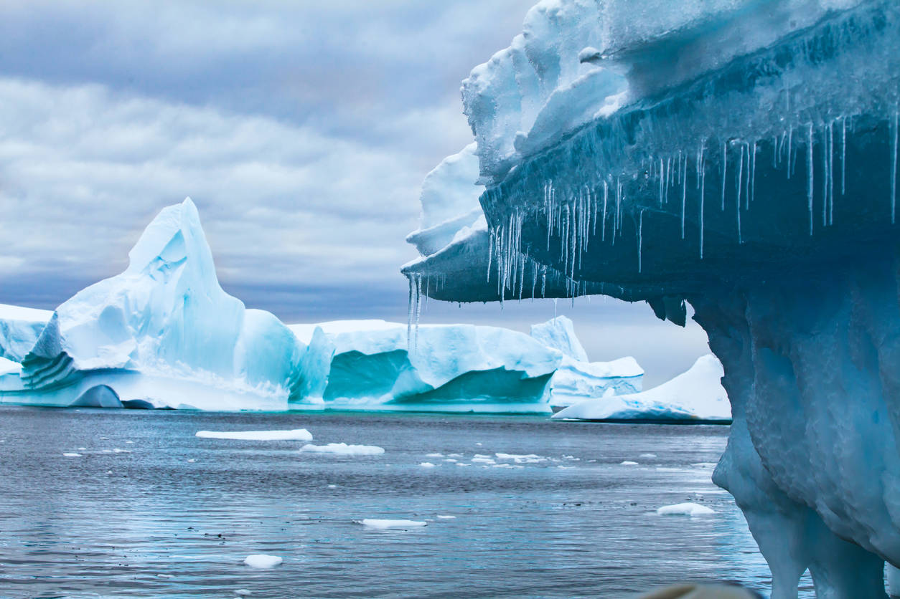

Why Are Sea Levels Rising?
While there are four main causes of sea level rise in Massachusetts, changes in ocean circulation and ice melt are the largest contributors. Because the rate of ice melt has been increasing significantly since 1992, and changes in ocean circulation are causing coastal storms such as Nor’easters to increase in frequency and intensity, Massachusetts is particularly vulnerable to sea level rise.